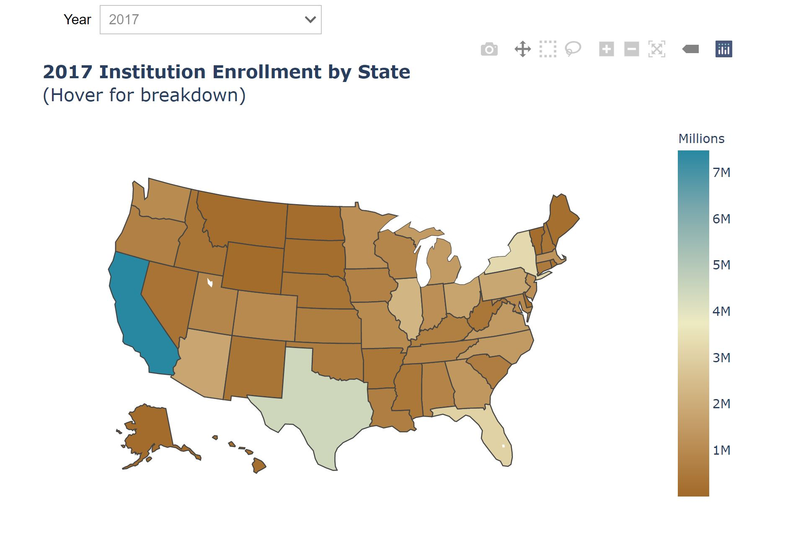

Enrollment by Geo location¶
In this visual, we are presenting state wise total enrollment and percentage. Enrollment percentage is calculated dividing state level enrollment by national enrollment.
pip install snowflake-connector-python==2.3.6 > /dev/null
#read required information to connect to Snowflake database
from getpass import getpass
accountName = getpass('Enter Snowflake account name:')
userName = getpass('Enter Snowflake user name:')
password = getpass('Enter Snowflake password:')
databaseName = 'ipeds' #@param {type:"string"}
sourceSchema='Public'#@param {type:"string"}
warehouseName = 'COMPUTE_WH'#@param{type:"string"}
Enter Snowflake account name:··········
Enter Snowflake user name:··········
Enter Snowflake password:··········
# Get data from snowflake
import snowflake.connector
import pandas as pd
from __future__ import print_function
from ipywidgets import interactive
import ipywidgets as widgets
# Gets the version
ctx = snowflake.connector.connect(
user=userName,
password=password,
account=accountName,
database=databaseName,
warehouse=warehouseName
)
cs = ctx.cursor()
try:
sql = """
WITH CTE_ENROLLMENT AS
(
SELECT A.ACADEMICYEAR AS YEAR
,B.STATE AS STATE
,SUM(A.TOTALMEN+A.TOTALWOMEN) AS ENROLLMENT
FROM ENROLLMENT A
INNER JOIN ACADEMICINSTITUTION B
ON A.INSTITUTIONIDENTIFIER = B.INSTITUTIONIDENTIFIER
GROUP BY YEAR, STATE
)
SELECT YEAR, STATE, ENROLLMENT
,ROUND(100.00 * (RATIO_TO_REPORT(ENROLLMENT) OVER \
(PARTITION BY YEAR)),2) AS PctOfTotal
FROM CTE_ENROLLMENT
ORDER BY YEAR, STATE;
"""
#print (sql)
cs.execute(sql)
records = cs.fetchall()
names = [x[0] for x in cs.description]
df = pd.DataFrame(records,columns = names)
finally:
cs.close()
ctx.close()
# Add formatted column to panda DF to be used for hoverinfo in the map
df["ENROL"] = df["ENROLLMENT"].apply(lambda x: "{:,}".format(x))
# Create the map and render
import plotly.graph_objects as go
import pandas as pd
from ipywidgets import interact, interactive, fixed, interact_manual
def color_million_red(value):
if value > 1000000:
color = 'red'
else:
color = 'black'
return 'color: %s' % color
def plot_graph(Year):
newdf = df[(df.YEAR == Year)]
fig = go.Figure(data=go.Choropleth(
locations=newdf['STATE'], # Spatial coordinates
z = newdf['ENROLLMENT'].astype(float), # Data to be color-coded
# set of locations match entries in `locations`
locationmode = 'USA-states',
colorscale = 'Earth',
colorbar_title = "Millions",
#text = newdf["PCTOFTOTAL"],
text = newdf['STATE'] + '<br>' + 'Enrollment : ' \
+ newdf['ENROL'] \
+ '<br>' + 'Percent of enrollment : ' \
+ newdf['PCTOFTOTAL'].astype(str) + ' %',
hoverinfo="text",
))
fig.update_layout(
title_text = '<b>' + str(Year)\
+ ' Institution Enrollment by State</b>\
<br>(Hover for breakdown)',
geo_scope='usa', # limite map scope to USA
autosize=False,
margin={"r":0,"t":80,"l":0,"b":0},
)
fig.show()
interact(plot_graph, Year=df.YEAR.unique());
Output:
